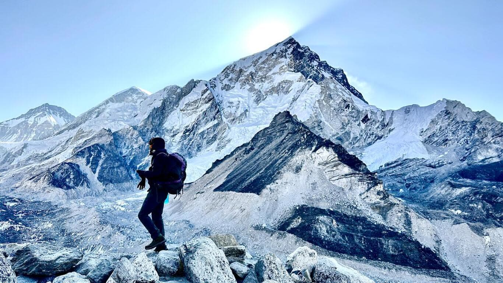
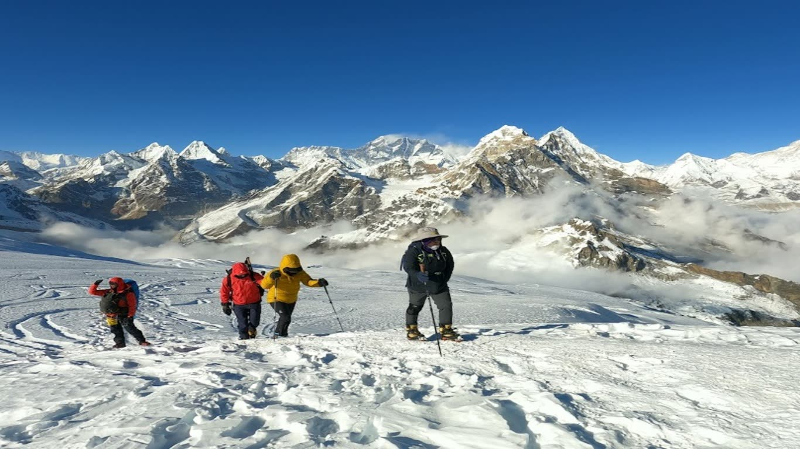
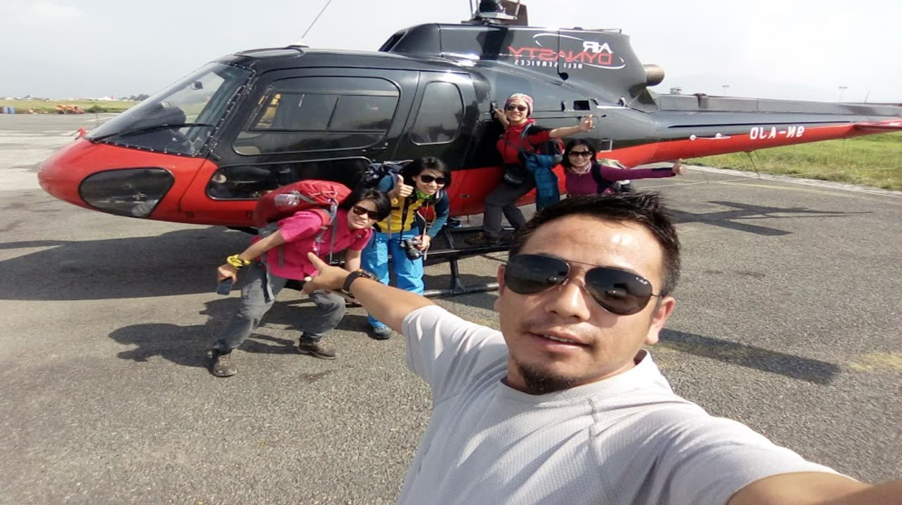
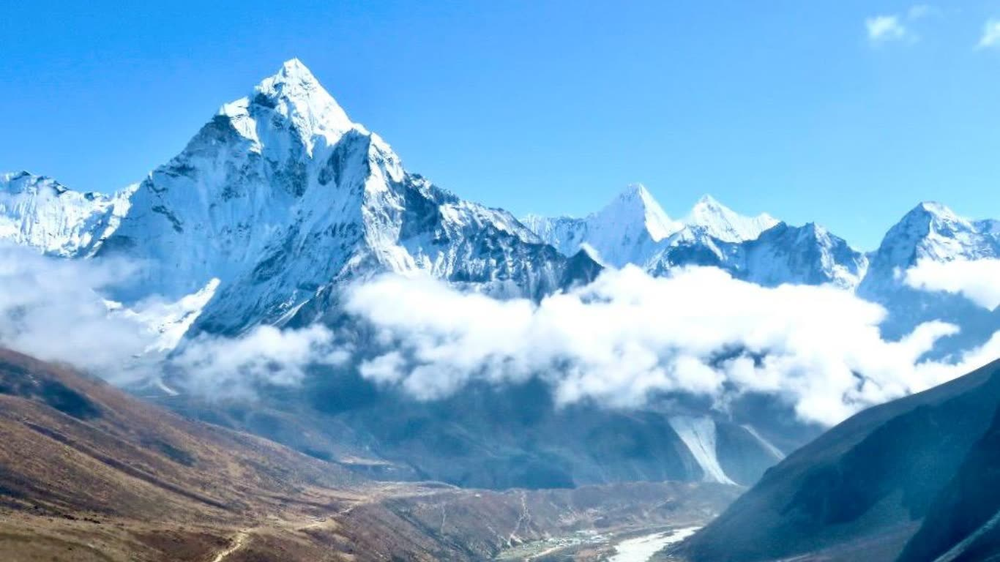
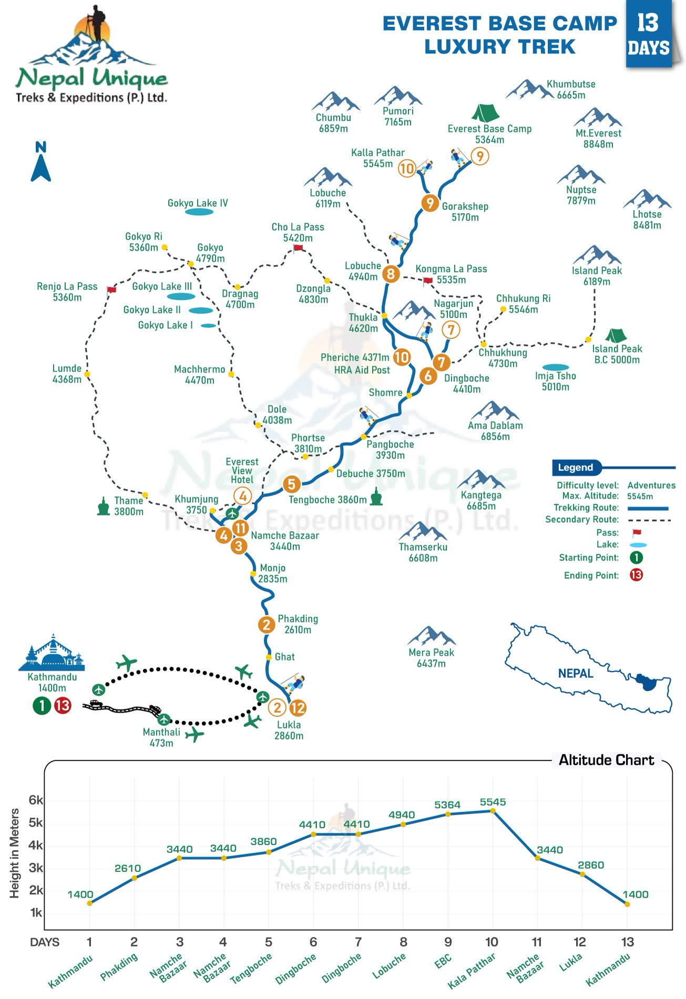

Everest Base Camp Luxury Trek
Everest Base Camp Luxury Trek Explore the Everest Base Camp Luxury Trek - 13 Days - Cost & Itinerary for 2026. Enjoy the stunning Himalayan landscapes, stay in comfortable lodges, and experience the trek with Nepal Unique Trek premium service.





Key Trip Facts
Trek Overview
Trip Highlights
Everest Base Camp Luxury Trek
Explore the Everest Base Camp Luxury Trek - 13 Days - Cost & Itinerary for 2026. Enjoy the stunning Himalayan landscapes, stay in comfortable lodges, and experience the trek with Nepal Unique Trek premium service. Traversing through the jungles, crossing the rivers and suspension bridges with the majestic views of the landscapes and the mountains, doing all of these in a pleasurable way. Then, you are in the right place. Everest Base Camp Luxury Trek makes sure you get the best services in every possible place during this entire journey.
The journey begins with an adventurous flight to Tenzing-Hillary Airport in Lukla. Trekking for a while, we then reach the capital of the Sherpas, Namche Bazaar. Moving further, we find our way traversing through forests, small settlements, historical monuments, and some challenging landscapes, and we reach our destination.
Exploring the flora and the fauna, with the staggering views of some of the tallest mountain peaks, landscapes, and experiencing the rich culture of the locals in the community will give you a once-in-a-lifetime experience. Additionally, the monasteries, museums, prayer wheels, gompas, and many more historical and traditional places will allow you to delve into much more about the lifestyle in the Himalayas region.
All of this adventure, experience, and thrill with the best services provided even in the higher altitudes is what you expect for this ultimate luxury in the Everest Base Camp Trek. We provide all of these in this particular package of the Everest Base Camp Trek. So, if you want to experience the finest service with the adventure, then you are at the right place.
Note: If you want to make this package even more luxurious, we can arrange your return from Gorakshep to Lukla in a helicopter. With a slight extra payment, you can ensure a stylish and comfortable return from the top of Everest Base Camp Trek. One amazing thing about choosing this alternative is that you will lose about 4 to 5 days of the descending journey.
Why choose us for this trek?
For the past 20 years, Nepal Unique Treks has been providing organized and adventurous trips all over Nepal. We have some of the best teams that will make sure that you have a great trip without any hassle in every possible manner. Moreover, the guides we have in the team are government license holders and have been in this sector for over a decade.
We provide these services not only in Nepal but also in Bhutan and Tibet. You can customize the itinerary according to your preferences, and we will proceed accordingly on this journey. Below is some additional information on why we are the perfect choice for the Everest Base Camp Trek
- Prioritizing the best experience in the entire journey, we ensure to provide you with the best services in every meal served and place accommodated.
- Skilled and experienced guides will help you from the very beginning of the trek, ensuring a better journey.
Permits required for Luxury Everest Base Camp Trek
For this trek, we require 2 different types of permits. These permits are crucial as they are verified by the local officers at the checkpoints. Only then are we allowed to pass through those areas. The permits required are:
- Sagarmatha National Park Entry Permit
- Khumbu Pasang Lhamu Municipality Entry Permit
- Trekker's Information Management System (TIMS) Permit
You need the first permit to enter Sagarmatha National Park en route and the second permit to access the Khumbu region. Without these permits, you cannot pass through those areas.
In Nepal Unique Treks, we help you get these permits without any hassle. Let us streamline the process for getting these permits while you prepare for the trek.
Why is Insurance necessary for the Everest Base Camp Luxury Trek?
While trekking at high altitudes in any place in Nepal, insurance is required. There are different kinds of insurance you can get before starting this journey. Some of them provide medical coverage, emergency evacuation, cancellation insurance, and many more. However, we suggest you take the insurance package that covers all of these.
Even though we will be trekking in the most favorable seasons of the year, there is always a little possibility of some changes in the weather. Only a simple change in weather can disrupt our trek and lead to other emergencies as well. Therefore, to ensure things go smoothly even in emergency cases, we recommend that you get the full package insurance.
We will ensure you have the best experience in every other condition, whether it be enjoying moments in the Himalayas or some rough times due to an emergency condition.
Everest Base Camp Luxury Trek Itinerary: Day by Day
13 Days program for Everest Base Camp Luxury Trek. Daily timings and sequences remain flexible according to weather, flight operations, and group pace.
Day 1: Kathmandu Sightseeing followed by Trek Preparation
Approx. 1,345 m / 4,413 ft
Before trekking to the mighty Everest Base Camp Luxury Trek, we would love you to see the Kathmandu valley. So, our representatives will pick you up in a private vehicle after you have your breakfast in the hotel. From there, we begin the tour of Kathmandu Valley. This tour offers trekkers with chances to delve deeper into the tradition, culture, and amazing sculptures of the valley. Moreover, you will also explore several UNESCO World Heritage Sites, including the Pashupatinath temple, Swayambhunath Stupa, and Bouddhanath Stupa. Along with that, the trekkers will also get chances to try out some local delicacies and cuisines during the tour of Kathmandu Valley. After that, we will take you back to the hotel and our professional guides provide you brief description of the entire Everest Base Camp Luxury Trek. Besides, we also recommend the trekkers get their backpacks checked by the guides. If you do so, the guides can provide you with information about what to take along and what not to do. After the trek preparation session, you can have your dinner and sleep as we will be meeting tomorrow to begin the luxury trek to Everest Base Camp.
Day 2: Drive from Kathmandu to Ramechhap in a Private Vehicle and fly to Lukla (2860 meters) and then Trek to Phakding or Manzo (2610 meters)
Approx. 2,610 m / 8,563 ft
Unlike the Classic Everest Base Camp Trek, we go from Kathmandu to Ramechhap via a private vehicle. The size or type of the vehicle depends upon the number of people in the group. Our journey to Ramechhap starts early in the morning after trekkers have their breakfast. After that, the guides from Nepal Unique Treks pick you up in a private vehicle and take you to Ramechhap. It takes about 4 to 5 hours for us to reach Ramechhap from Kathmandu through a well-pitched road with beautiful scenarios on both sides of the road. Passing through several settlements, forests, waterfalls, etc, we will reach Ramechhap. As you reach this beautiful place, our guides will lead you to the Tenzing Hilary Airport (Lukla) and then you will go on a 20-minute flight to Lukla. From Lukla, we begin the walking journey on the Luxury Everest Base Camp Trekking route. Within the next 4 to 5 hours of walking, we will step our feet into the first checkpoint, Phakding. Well, this place is also known as Manzo and offers trekkers a warm welcome to the Everest trekking region. Take your time to stroll around the village before you have your dinner and sleep for the night. As this is a luxury trek in the Everest region, our team will arrange a high-quality hotel or guesthouse for your stay.
Day 3: Trek from Phakding to Namche Bazaar (3,444 meters) - 6 to 7 hours
Approx. 3,444 m / 11,299 ft
How did you like your stay in Phakding? Well, it's just the start of one of the best trekking journeys on the Everest Base Camp route. Once you get freshened up and have your dinner, the guides will lead you on the day hike from Phakding to Namche Bazaar. This section of the Luxury EBC Trek takes you through the lush pine forest and across some suspension bridges above the Dudh Koshi River. On that verge, you also get a chance to walk over the famous Hilary suspension bridge. As we cross the Hilary suspension bridge, the trekkers will get the first spectacular view of the Thamserku Himal (6618 meters). After that, we will pass through some settlements like Benkar, Chumoa, and Monjo before entering Sagarmatha National Park. However, before entering the National Park, the trekkers need to get their permits checked. In this area, you will also get chances to witness many species of animals and birds. Finally, after walking on a rugged yet comparatively easy trail, we reach Namche within the next 6 to 7 hours. Moreover, in this section of the Luxury Everest Base Camp Trek, we also pass through some forests, bridges, and rivers like Dudh Koshi and Bhote Koshi rivers. The final section requires a steep ascent of about two hours before we reach Namche Bazaar. Also, you will get to enjoy the first view of Mount Everest (8850 meters) peeking from the Lhotse-Nuptse ridge. Once you reach Namche Bazaar, the scenes of this town will leave you flabbergasted. Such amazing settlements, luxury internet cafes, and hotels at such high altitudes are enough to give you one of the best stays in Namche Bazaar for the night.
Day 4: Acclimatization Day in Namche (Quick Hike to Everest View Hotel)
Approx. 3,440 m / 11,286 ft
On the fourth day of this exciting luxury trek to Everest Base Camp, we will not ascend any further. As we have already ascended to an altitude of 3440 meters above sea level, the trekkers require rest and especially, acclimatization. Acclimatization means resting your body to adapt to the higher altitude. This offers trekkers with energy and fitness to cope with altitude sickness at a higher altitude. However, acclimatizing or rest day does not mean we will go idle throughout the day. Instead, the guides will take you on a quick hike to the Everest View Hotel. Located at an altitude of 3880 meters above sea level, this hotel offers one of the best panoramic views of Mount Everest. You can take your time to take a few sips of coffee at the Everest View Hotel. From this hotel, we can also watch spectacular views of other mountains like Mt. Lhotse (8414m), Kusum Kanguru (6367m), Thamserku (6623m), Nuptse (7861m), and Ama Dablam (6856m). However, before hiking to Everest View Hotel, you can also explore some other significant places, including the Sherpa Museum, ART Gallery, Documentary places, and different bakeries. Other than that, the guides will also take you to visit the Khunde Hospital, a hospital built by Sir Edmund Hilary. Finally, you will return to the hotel for dinner and an overnight stay.
Day 5: Trek from Namche Bazaar to Tengboche (3860 meters) - 5/6 hours
Approx. 3,860 m / 12,664 ft
On the fifth day of the Luxury Everest Base Camp Trekking journey, we will leave Namche Bazaar and ascend on a rather difficult trail. Yes, ascending over an altitude of 3000 meters means walking in an altitude sickness-prone area. Therefore, we suggest that trekkers be very careful, keep a slow pace, and keep themselves hydrated. We start the trek after breakfast with some mighty mountains watching us ascend. On your hike from Namche to Tengboche, you will get to see even more Himalayas like Kantega and Phortse Peak along with other mountains. As there are comparatively fewer settlements and more forests, the trekkers will feel more closer to nature. Due to that reason, we can also experience peace and serenity. Moreover, you might also get to witness different animals and birds if lucky enough. Within the next 4 hours of leaving Namche Bazaar, we finally reach Tengboche. Talking about Tengboche, this village got its name from the Tengboche monastery, the oldest and biggest monastery in the Khumbu region. Due to that reason, you will experience peace, and a pristine environment, and listen to a lot of religious hymns in this village. Furthermore, we recommend the trekkers visit the monastery where they can meet many monks and watch them meditating or performing rituals. Overnight stay and dinner will be arranged by Nepal Unique Treks in a hotel or guesthouse.
Day 6: Ascend from Tengboche to Dingboche (4410 meters) - 5 to 6 hours
Approx. 4,410 m / 14,469 ft
On the sixth day, we will have to cover a total distance of 11 kilometers and reach an altitude of 4410 meters above sea level. This might take about 4 to 5 hours for any average trekkers if they go with a slow and steady pace (which we recommend at such high altitudes). The beginning section of the trail from Tengboche to Dingboche descends towards Deboche till Imja Khola through lush forests before taking an ascending turn towards Pangboche Village. The trail from Dingboche to Pangboche is covered with pine trees, Mani walls, and different monasteries. So, you will mostly walk on a peaceful and calm trail on this day. A little more hours of walking from Pangboche and we will reach a small village named Somare. This is where the trekkers have the sixth day's lunch in the Luxury Trek to Everest Base Camp map. From Somare, we will have to walk for 2 more hours to finally step our feet into the Dingboche village 4410m. We suggest you stroll around the village and interact with the locals before checking in at the hotel for dinner and an overnight stay.
Day 7: Acclimatization Day at Dingboche (Day Hike to Nagarjun Viewpoint)
Approx. 4,410 m / 14,469 ft
Well, it is another rest day in the Luxury Everest Base Camp Trek trail as we will spend a day in Dingboche. As we are at an altitude of 4410 meters above sea level, it is very crucial to let our body and organs adapt to the temperature and conditions. On this day, the trekkers can go for a steep climb to Nakartsang Gompa to get exceptional views of the different Himalayas and mountain ranges. Besides, one of the best options for the day is to go on a Day Hike to Nagarjuna viewpoint. This viewpoint offers spectacular views of the Himalayas, valleys, and settlements around the trail. Moreover, you can also take a stroll in the village itself and watch a beautiful sunset view from such a high altitude. Also, interact with the locals and try to delve deeper into their lifestyle and culture, We request all the trekkers to return to the hotel by the evening for dinner followed by an overnight stay.
Day 8: Ascend from Dingboche to Lobuche (4940 meters) - 6 hours
Approx. 4,910 m / 16,109 ft
Today, the journey in the luxury Everest Base Camp trekking map takes us to the base of one of the famous peaks, Lobuche Peak. Yes, we leave Dingboche early in the morning after having breakfast and walk to cover a total distance of 12 kilometers. It takes about 6 hours for any average trekker to cover this section of the trek. As we start the walk today, we will have to pass a place named Dughla, a place that offers panoramic views of the snow-capped mountains. On our way to Lobuche from Dingboche, we will also pass through a rocky glacial moraine and a stone cave built in the memories of Sherpas who died on their journey to the peak of Everest. A little more to walk and we will finally reach Lobuche. This marks an end to the eighth day of the Luxury Everest Base Camp Trek with Nepal Unique Treks.
Day 9: Hike from Lobuche to Everest Base Camp (5364 meters) and return to Gorakshep (5180 meters) - 8 hours
Approx. 5,364 m / 17,598 ft
Out of all these days in the luxury Everest Base Camp Trek, the trekkers will have to walk slightly more hours on average on the ninth day. However, the place you reach today is worth all these long walking hours. We will be ascending to the Everest Base Camp and then descending to Gorakshep which takes about 8 hours and covers 15 kilometers. Make sure to be prepared for some heart-pounding adventures and difficult trails as we make our way to the Everest Base Camp. As we leave Lobuche, we will be walking through the lateral moraine of the Khumbu glacier before passing through the pyramid signpost. A little walk and we will find ourselves at a checkpoint named Thangma Riju, a place that offers a 360-degree vista of the snow-covered peaks. From there, we will first make our way to Gorakshep. Gorakshpe is the highest settlement in Nepal where people actively reside. From here, Everest Base Camp is just two hours away, which means we will stop for a quick break before climbing to the base camp. Once you are in the base camp, we recommend trekkers stroll around and take as many photos and videos as possible. Also, take a closer look at the camps settled by the mountaineers on their way to the peak of Mount Everest. Remember that, we will spend only a little time in the Everest Base Camp as the weather here is highly unpredictable. After you make memories and get that breath of accomplishment, we make our way back to Gorakshep. Here, the trekkers will have their dinner and stay for the night.
Day 10: Early Morning Hike to Kalapatthar (5550 meters) - 2 hours and Descend to Pheriche (4371 meters) - 5 hours
Approx. 4,371 m / 14,341 ft
Well, today we will ascend to the highest point of the entire Luxury Everest Base Camp Trekking map. We recommend the trekkers wake up at around 4 A.M. because it will be an early sunrise view hike to Kalapatthar viewpoint. It takes about 2 hours for us to reach the viewpoint after which you can enjoy one of the most spectacular and heart-stopping views of the sun rising from the east. Along with that, you will also witness several snow-capped mountains turning golden when the sun's rays strike them. After spending some time, the guides will take you back to Pheriche. The journey from Kalapatthar to Pheriche takes about 5 hours and we will cross several villages, lush forests, barren lands, etc. However, the trekkers even have the option to make this the second last day of the Luxury Everest Base Camp Trekking package. Want to know how? Well, you can return to Gorakshep from Kalapatthar and come to Lukla by heli ride. That will on your choice and it will cost Approximately ($1800 per flight) However, this requires the trekkers to pay an extra amount of money. If you choose that option, the guides will take you to Gorakshep and board you on a helicopter that will bring you to Lukla on the same day. If you go for the normal itinerary, we still have 4 days remaining. As you reach Pheriche, you can stroll around the village before having dinner and sleeping for the night.
Day 11: Descend from Pheriche to Namche Bazaar (3444 meters)
Approx. 4,344 m / 14,252 ft
Once again to the heaven of Sherpa settlement or let's say, the trading hub of Nepal as we make our way from Pheriche to Namche Bazaar. After several days of walking on comparatively barren and difficult terrain, the trekkers will get a chance to rest properly in Namche Bazaar. Besides, you will notice that even the trail starts becoming less rugged as we reach near Namche Bazaar. Walking past some lush forests, pine trees, rhododendron blooms, and smaller settlements, we reach Namche within 7 hours. You can spend the rest of the day strolling the town, having some bakery items, interacting with the locals, and of course, trying yak cheese, a famous delicacy of Namche Bazaar. After that, you can return to the hotel for dinner before sleeping for the night.
Day 12: Descend from Namche Bazaar to Lukla (2860 meters) - 7 hours
Approx. 2,860 m / 9,383 ft
Well, even though we are on a descending journey, this section of the Everest Base Camp Luxury trek requires the trekkers to walk for about 7 hours. That is because we need to cover a total distance of about 19 kilometers. However, as the trail will be less rugged and there will also be many tea houses, the walk will not be difficult at all. As you reach Lukla, you will experience even the weather changing. Besides, the houses and communities are also well-developed than the ones you watched in the higher altitudes. Take your time to rest and sleep for the day before waving goodbye to the Everest region on the next day.
Day 13: Drive from Lukla to Ramechhap and Flight to Kathmandu
Approx. 1,345 m / 4,413 ft
As you wake up in the morning and have your breakfast, we recommend you pack your bags. Also, remember to check whether you have carried all your belongings or not. Once you are done with that, our guides will take you to the Tenzing Hilary Airport. From there, the trekkers will board the flight that takes them to Ramechhap. It takes about 20 minutes for the plane to reach Ramechhap. As you land in Ramechhap and receive your luggage, our guides will take you to the private vehicle. Again, let us remind you that the size of the vehicle depends upon the number of people in the group. Once you board the vehicle, it's just a matter of 5 hours for us to wrap up the 13-day Luxury Everest Base Camp Trekking package.
What is Included (Regular Package)
What is Excluded
Booking Dates & Availability
Packing List for Everest Base Camp Luxury Trek
Essential Info: Down jackets and sleeping bags can be rented/arranged per package inclusions.High-Altitude Trail Gear (6 items)
Cold-Weather Layering System (5 items)
Sleep, Health & Permits (3 items)
Read before you book: Everest Base Camp Luxury Trek
Practical logistics derived directly from this package's route facts, inclusions, and elevation profile.
Accommodation & Meals (Hotel. Lodge)
Accommodation follows the package grade (Hotel. Lodge) in Kathmandu and along the Everest route. Check your package Includes section for included meals and Kathmandu hotel nights.
Permits & Local Logistics
Transportation is arranged via Flight, Private Car, Van. Applicable permits listed in the package inclusions are arranged by Nepal Unique Treks prior to departure.
Route Difficulty & Elevation (5,364 m)
Everest Base Camp Luxury Trek is rated Adventure with a maximum elevation of 5,364 m. Follow your guide's pacing and stay hydrated throughout the 13 Days itinerary.
Best Time to Visit (October, November, December, and March, April, May)
Recommended operating season on the source page: October, November, December, and March, April, May. Additional official notes from the source page follow below.
Traveller Useful Information
Explore and get to experience a luxury in the journey to Everest base camp. Right from the booking process to the departure, at every step, we ensure you have comfort.
An adventurous flight to Lukla, marking the beginning of the journey includes a panoramic view of multiple mountain peaks along with deep gorges, valleys,s and rivers.
Immerse yourself into exploring the Namche Bazaar, with the great vibrant culture of the locals, and experience their daily lifestyle.
Indulge yourself in the religion of the locals at Tengboche Monastery, also known as Dawa Chholing Gompa is one of the largest Gompa in the Khumbu Region and has great significance for the Sherpa people. It is more than just a religious place for the Sherpa community. It has been keeping the Tibetan Buddhism alive for years in this region.
Kalapatthar viewpoint(5,550 meters) is the highest point of altitude which we will reach in this trekking. From here, we get the picturesque view of the sunrise with the mountain peaks.
The food and the accommodation vary from place to place and can get limited as we ascend. However, in this package, we ensure that you get fresh foods with higher nutrients and calories at the best place so that you can rest peacefully at night.
Along the path, there are some challenges that we will encounter. And it is important to be aware of the difficulties and challenges to cross these phases safely. Only then we are rewarded with the stunning views and much more ahead.
The landscapes and the terrains here are spectacular to view. However, when it comes to traversing through one of these, then it gets challenging. Traversing in these terrains requires technical skills. The trails are steep, with numerous ups and downs, narrow paths, rocky stretches, and boulder-filled routes.
Anywhere from 5 to 7 hours, we will be trekking every day. And the terrains are going to be tough in some points. Therefore it’s essential to prepare your body with cardiovascular exercises like running or walking. This preparation will help you manage the challenges of the trek, both physically and mentally.
Similarly, the altitude is another biggest challenge you will face during this journey. As you ascend to higher altitudes, reaching over 4,000 meters, there is a significant risk of altitude sickness. To minimize this risk, it is essential to acclimatize properly, which is why Nepal Unique Trek expert trek guides have designed the itinerary to include rest days at strategic points, ensuring your body adjusts gradually.
In summary, while the Luxury Everest Base Camp Trek is moderate, it does come with its difficulties. Being physically fit, properly prepared, and following your guides' advice will equip you to handle the challenges and enjoy the journey to the base of the world's highest peak.
From the very beginning of this journey, we will provide you with a private commute. From picking you up from the airport or dropping you off at the airport, we will provide you with a private vehicle that has the best comfort. Moreover, we will take care of the connecting flight from Kathmandu to Lukla or Ramechhap to Lukla.
If you choose to take a flight from Ramechhap, then we will arrange a bus to travel from Kathmandu to Ramechhap. Furthermore, to ensure you have a comfortable drive along the way, we only provide a luxurious bus.
Weather conditions might not be feasible on some days, due to which our flight to Lukla can get canceled. In this condition, you can accommodate for the day and we will make sure you have the next flight for tomorrow. Also, we have the option to reach Lukla on the same day via Helicopter ride. For 5 people this costs nearly $3,000 from Kathmandu to Lukla.
Helicopter Flights can be much more convenient as you won't have to wait for normal planes. The flight will take off on time. In addition, the breathtaking views from the flight you get are beyond imagination. Hence, if you wish to book a flight to Lukla via Helicopter, we will arrange it for you hassle-free.
We can complete this journey in any of the four seasons. However, Spring, and Autumn seasons are favored by most trekkers, as the weather conditions are much more stable during these periods. Additionally, we get the chance to explore much more in these seasons with a clear sight and the path ahead of us. Furthermore, the open sky with gentle weather allows us to navigate through landscapes, meanwhile pleasing our eyes with the scenic views of the mountains, forest, and other historical monuments.
Spring season (February-May) is preferred for any trekking in Nepal. The fluctuations in the weather are minimal due to which we can experience every bit of our journey. Moreover, the weather is stable and the sky is clear giving us a scenic view throughout the path. The blooming rhododendron and other wildlife flowers, with the lush hill, also makes the route more vibrant and beautiful.
Similarly, the Autumn season (September-October) is another favorable season for the trekkers. Just like the Spring seasons, the weather is consistent with a clear sky during the daytime and a few clouds in the afternoon. The nighttime is also cool and chills with a clear sky. Moreover, the color of the leaves and flowers starts to change in this season. The fallen leaves and the flowers create a beautiful carpet of orange foliage en route.
In the entire journey, meals and accommodation are the highlights of the Luxury Everest Base Camp Trek. For this particular trekking package, we have selected the best place to stay for the night which also provides the finest dining experience in the mighty Himalayas regions. Furthermore, if you have any specific requirements regarding the food or the accommodation feel free to share them with us. We will manage it accordingly.
The meal availability and the variety can differ from place to place. From Nepali, Tibetan, Indian, and Western cuisine. From the very beginning of this journey, we have provided you with the finest dining daily. With a variety of options to choose from, you can enjoy your meal with stunning views of the surroundings.
Similarly for the accommodation, it varies from place to place. Even in the standard room, we can get various options. According to your preferences, we can provide the rooms for you. They come with every amenities like a hot shower, blow dryer, charging station, and Wi-Fi. Moreover, the design of the places is more traditional giving it a unique touch.
While moving up to higher altitudes in the Himalayas, it is common for trekkers to have altitude sickness. It is a condition where our body struggles to adapt to the lower oxygen level at high altitudes. Some of the common symptoms include nausea, shortness of breath, headache, dizziness, and fatigue. Therefore, for our safety, it is crucial to understand and mitigate the risk of altitude sickness to have a safe and enjoyable journey.
Remember, altitude sickness affects everyone differently, so it’s crucial to stay alert and take action at the first sign of discomfort. With proper precautions like gradual ascent, hydration, and nutrition, you'll be well-prepared to complete and enjoy your trek.
Altitude Sickness also known as Acute Mountain Sickness(AMS) can escalate into more serious conditions, like High Altitude Pulmonary Edema (HAPE) or High Altitude Cerebral Edema (HACE), both of which require immediate medical attention. However, with the right precautions, you can minimize the risks.
One of the best ways to combat AMS is to follow a careful acclimatization schedule. This means gradually ascending and allowing your body to adjust to the altitude. Therefore, our trek includes rest days specifically designed for this purpose.
Importantly, always notify your guides when you feel any of the symptoms or discomfort during the trek. With these precautions in place, you’ll be ready to conquer the 13-day Everest Base Camp trek safely, all while experiencing the beauty and majesty of the world’s highest peak.
It is necessary to pack all the things we require on the trek beforehand. As we ascend in our journey, the chances of getting different items are lesser. Therefore, we must pack everything we require for this journey before we start this trek. We have created a list of items that you are required to pack:
Waterproof Trekking Shoes
Thick Warm Woolen Socks
Trekking Trousers
Thermal T-shirt (Long Sleeves)
Down Jacket
Waterproof Jacket
Warm Waterproof Gloves
Headlight for Night or Sunrise Hike
High-Quality Trekking Poles
Day Backpack
Waterproof Bag
Thermal Water Bottle
First Aid Kit
Power Bank
Snacks (Energy Bars and Power Gel)
Trekking Trail Map
Mobile Phone and Power Bank for Mobile Charging
Padlock and Key for Safe Backpack
Sun protection cream, wet wipes, and hand sanitizer
Sleeping bags
Sunglasses, sun hat, or woolen cap
Regarding the booking process for this journey, we have multiple options. You can directly message us on WhatsApp, Zalo, or Viber at +9779851023285. Also, you can email us at info@nepaluniquetreks.com or nepaluniquetreks@gmail.com. Moreover, we also customize the itinerary according to your requirements and make sure your trip goes according to your plan.
After you choose how you want to proceed with the itinerary, for the booking we require a 30% deposit to secure your spot. In addition, you can communicate with our team directly regarding payment methods.
Once your booking is confirmed, we will provide you with additional information to help you prepare for your trip. If you have any questions about the booking process, feel free to contact us anytime.
Altitude Profile of Everest Base Camp Luxury Trek
Weather on Everest Base Camp Luxury Trek
Everest Base Camp Luxury Trek Route Map

Book This Trek
Contact our Kathmandu coordinators using the booking panel for private or fixed-group departures.
Trip Feedback
Explore verified traveller stories or leave feedback on Nepal Unique Treks.
Visit Nepal Unique Treks